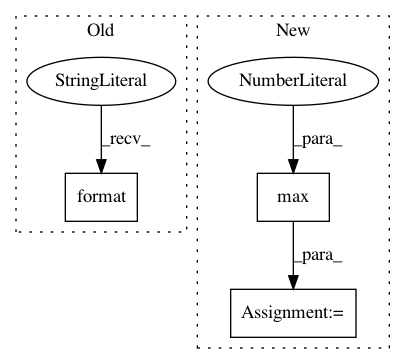

77a6ec73c53c5cc62a2ae451694537144afa5644,mnist/main.py,,test,#Any#,74
Before Change
test_loss = test_loss.data[0]
test_loss /= (test_data.size(0) / TEST_BATCH_SIZE) // criterion averages over batch size
print("TEST SET RESULTS:" + " " * 20)
print("Average loss: {:.4f}".format(test_loss))
for epoch in range(1, NUM_EPOCHS+1):
train(epoch)
After Change
batch_targets.data[:] = test_labels[i:i+TEST_BATCH_SIZE]
output = model(batch_data)
test_loss += criterion(output, batch_targets)
pred = output.data.max(1)[1]
correct += pred.long().eq(batch_targets.data.long()).sum()
test_loss = test_loss.data[0]
test_loss /= (test_data.size(0) / TEST_BATCH_SIZE) // criterion averages over batch size
In pattern: SUPERPATTERN
Frequency: 4
Non-data size: 3
Instances
Project Name: OpenNMT/OpenNMT-py
Commit Name: 77a6ec73c53c5cc62a2ae451694537144afa5644
Time: 2016-09-14
Author: alerer@fb.com
File Name: mnist/main.py
Class Name:
Method Name: test
Project Name: EpistasisLab/tpot
Commit Name: e47c356f2f4164d0050109694d84dc955823fbf8
Time: 2016-05-19
Author: supacoofoo@gmail.com
File Name: tpot/export_utils.py
Class Name:
Method Name: replace_function_calls
Project Name: ray-project/ray
Commit Name: 63594c537064d5cc47179169df6e6e6defa613d6
Time: 2021-03-25
Author: ed.nmi.oakes@gmail.com
File Name: python/ray/serve/backend_state.py
Class Name: BackendState
Method Name: _scale_backend_replicas